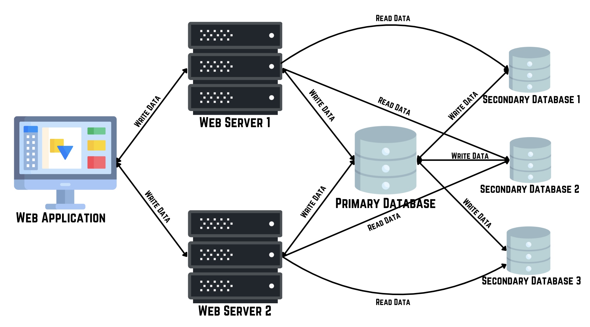
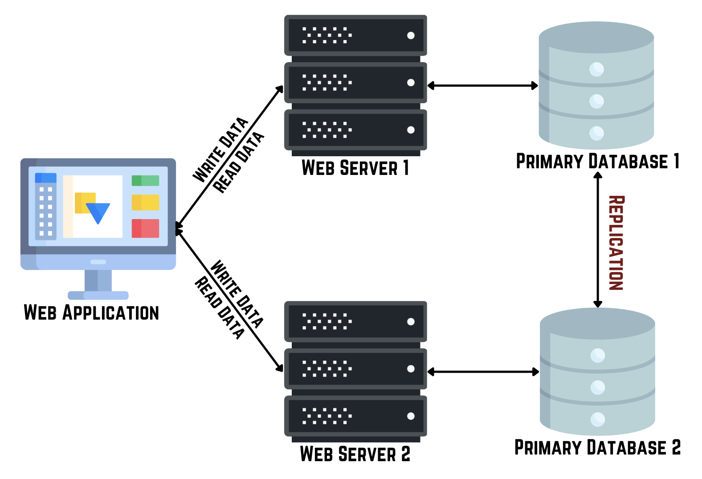
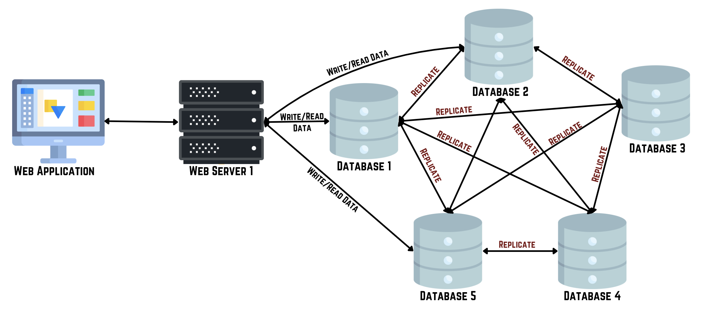

In today's data-driven world, ensuring data availability, reliability, and fault tolerance is critical for any application. One of the key techniques used to achieve these goals is database replication. In this post, we'll explore what database replication is, its various types, and best practices to implement it effectively. Database replication is the process of copying and maintaining database objects, such as tables and databases, across multiple database servers. This technique enhances data availability, reliability, and disaster recovery by ensuring that copies of the data are available at different locations.
Types of Database Replication
-
Primary-Secondary Replication
In primary-secondary replication, one database server (the primary) handles all the write operations, and one or more servers (secondarys) replicate the primary’s data. Secondarys can handle read operations to reduce the load on the primary.
Use Case: Ideal for read-heavy applications where distributing read traffic can significantly improve performance.
 -
Multi-Primary Replication
This involves multiple primary servers where each can accept write operations and replicate changes across all other primarys. Conflict resolution mechanisms are essential here.
Use Case: Best for distributed applications where data modifications can occur at different locations.
 -
Masterless Replication
Masterless replication is a database replication strategy where all nodes are equal and can handle read and write requests independently, ensuring high availability and fault tolerance without a single point of failure.
Use Case: Ideal for distributed systems needing high availability and fault tolerance.

Synchronous vs. Asynchronous Replication
| Aspect | Synchronous Replication | Asynchronous Replication |
|---|---|---|
| Consistency | Ensures immediate consistency across all replicas. | May have temporary inconsistencies between replicas. |
| Performance Impact | Higher impact on performance due to real-time copying. | Lower impact on performance as data is copied with a delay. |
| Latency | Low latency but can increase with network distance. | Higher latency but more tolerant of network delays. |
| Complexity | More complex to implement and maintain. | Less complex and easier to scale. |
| Use Case | Critical for applications requiring strong data consistency. | Suitable for scenarios prioritizing performance and scalability over immediate consistency. |
Benefits of Database Replication
- High Availability: Ensures that data is always available, even if one of the database servers fails.
- Disaster Recovery: Protects against data loss by maintaining copies of the database at different locations.
- Load Balancing: Distributes read operations across multiple servers, enhancing performance.
- Fault Tolerance: Provides redundancy, ensuring that a failure in one server doesn't affect the overall system's functionality.
Best Practices for Implementing Database Replication
- Choose the Right Replication Type: Analyze your application’s needs to select the appropriate replication strategy (e.g., master-secondary, master-master).
- Network Configuration: Ensure low-latency and high-bandwidth network connections between database servers to facilitate efficient data replication.
- Data Consistency: Implement robust conflict resolution mechanisms, especially in multi-master replication setups.
- Monitoring and Maintenance: Regularly monitor replication processes and maintain logs to quickly identify and address issues.
- Security: Use secure connections (e.g., SSL/TLS) to protect data during replication. Implement access controls to safeguard replicated data.
- Testing: Regularly test your replication setup to ensure it meets your performance and reliability requirements.
Challenges and Solutions
-
Latency: Asynchronous replication can introduce latency. Mitigate this by optimizing network performance and considering synchronous replication for critical data.
-
Conflict Resolution: Multi-master replication can lead to conflicts. Use automated conflict resolution techniques and prioritize business rules for manual conflict handling.
-
Scalability: As the number of replicas grows, so does the complexity. Use hierarchical replication strategies and partition data where possible to manage scalability.
Database replication is a powerful technique to enhance data availability, reliability, and performance. By understanding the various types of replication and implementing best practices, you can ensure that your application can handle the demands of a modern, data-driven environment. Whether you're dealing with high read loads, needing robust disaster recovery, or ensuring high availability, replication provides the foundation for a resilient data infrastructure.
Database replication is a powerful technique to enhance data availability, reliability, and performance. By understanding the various types of replication and implementing best practices, you can ensure that your application can handle the demands of a modern, data-driven environment. Whether you're dealing with high read loads, needing robust disaster recovery, or ensuring high availability, replication provides the foundation for a resilient data infrastructure.